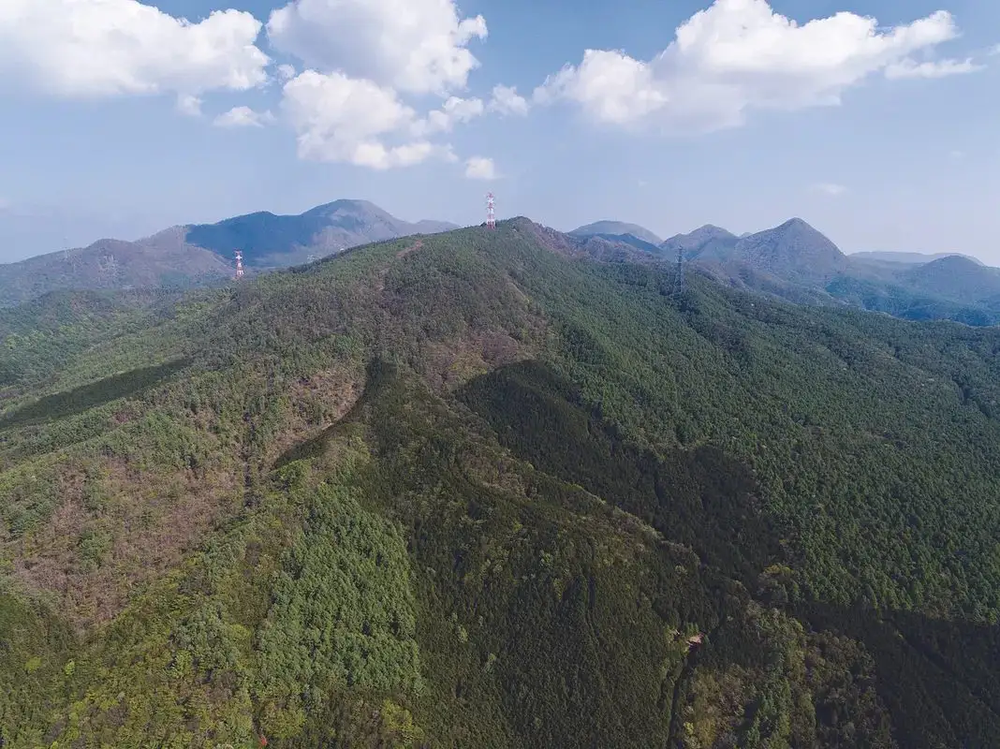
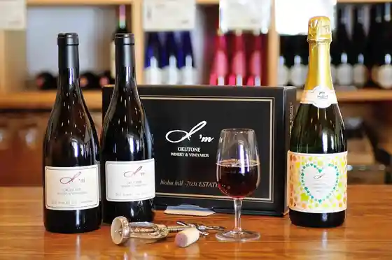
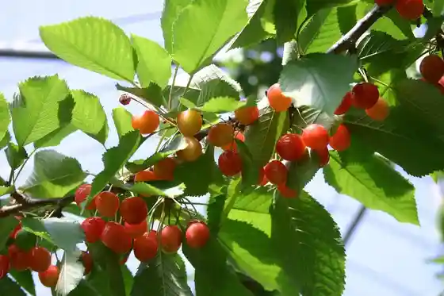
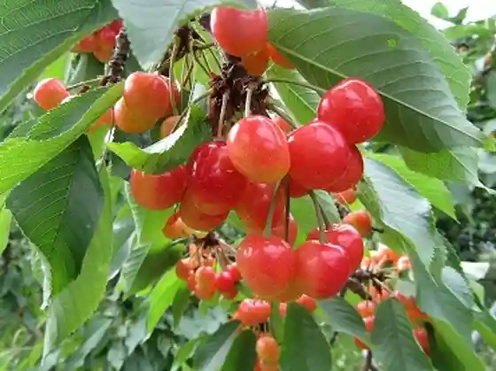
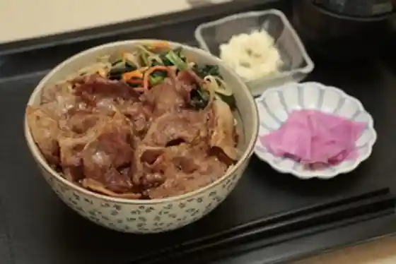

Japan / Gunma / Showamura
Showamura
Showamura · Gunma
Showamura
Highlighted on the Gunma map.

Sights
Okutone Wainarii
Showamura, Gunma · 0278-50-3070 · Official / source link

Tenmaya Sakurambo Sono
Showamura, Gunma · Official / source link

Oto Sono
Showamura, Gunma · Official / source link

Showamura Sakura Workshop Noka Resutoran
Showamura, Gunma · 0278-25-4831 · Official / source link

Showamura no Soba Hatake
Showamura, Gunma · 0278-25-4831 · Official / source link
Roadside Station Aguriimu Showamura
Showamura, Gunma · 0278-25-4831 · Official / source link
Showamura Forest Gorufu Ba
Showamura, Gunma · 0278-24-7172 · Official / source link
Akagiyama Funegahana Tozando
Showamura, Gunma · 0278-24-5111 · Official / source link
Soba Tokoro Akafu
Showamura, Gunma · 0278-24-7110 · Official / source link
Ichi no Kura
Showamura, Gunma · 0278-22-2722 · Official / source link
Yamada Shoten
Showamura, Gunma · 0278-24-7712 · Official / source link
LACTUCA
Showamura, Gunma · 0278-25-4831 · Official / source link
Mura no Naka Shokudo / Mura no Naka Kohii
Showamura, Gunma · Official / source link